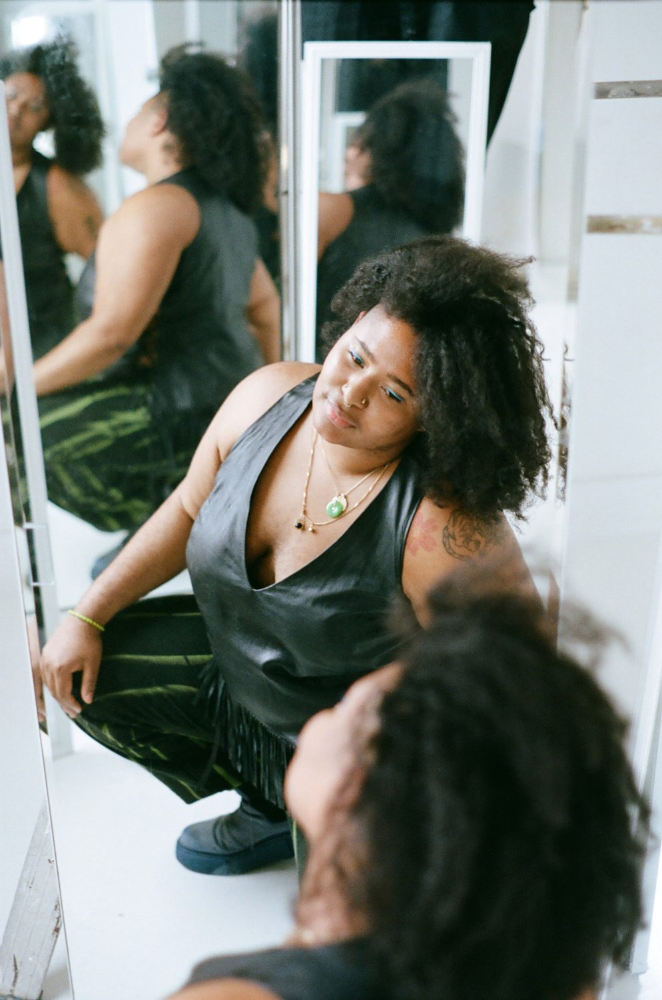

Amina Ross (they/them) is an artist, filmmaker, and educator working across video, sound, sculpture, and installation. Their work has been shown at Tate, MoMA PS1, the Tang Teaching Museum, the Hessel Museum at Bard, and the MCA Chicago, and was recently included in Fade at the Studio Museum in Harlem. They have held residencies at MacDowell, Skowhegan, the Bemis Center, and Wave Hill, with solo exhibitions forthcoming at Parent Company Gallery and Smack Mellon in 2027. Ross holds an MFA in Sculpture from Yale and a BFA from the School of the Art Institute of Chicago. Through centerstudy, they lead body-based writing workshops, critique groups, and one-on-one sessions for artists, writers, and creative practitioners of all kinds.

I'm Amina Ross.
they/themI'm an artist, filmmaker, and educator born and raised in New York City, now based in Brooklyn. I work wherever my heart and intuition take me. Right now that's kiln-cast glass and clay; at other times it's 3D animation, video, or synthesizers. Form is fluid.
My research asks how people refigure and resist dominant systems in order to thrive in safety. In my studio that shows up as darkness, partial visibility, and the right to opacity. In a room with other people, it shows up as practice: breathing, centering, writing, listening, and witnessing one another.
For more than ten years I have founded and facilitated spaces for learning, from the Teen Creative Agency at the MCA Chicago to collectives like 3rd Language, F4F, Beauty Breaks, and Cooperation 4 Liberation. I have taught at Parsons School of Design, RISD, Vassar, the Yale School of Art, and the School for Poetic Computation. I am a certified yoga teacher and Reiki practitioner.
centerstudy is where these threads meet. My approach is grounded in a politicized (re)connection to our bodies, and in the belief that our bodies are a primary source of knowledge, not a supplement to it.
Short bios
centerstudy is a school and creative project led by artist and educator Amina Ross (they/them). It offers body-based writing workshops, critique groups, community gatherings, and one-on-one sessions for artists, writers, and anyone whose work is creative at its core, alongside study objects: workbooks, printed matter, and handmade ritual ware. Rooted in writing, a centering process, and cooperation, centerstudy is a Black, queer, and trans-led project that is slow on purpose.